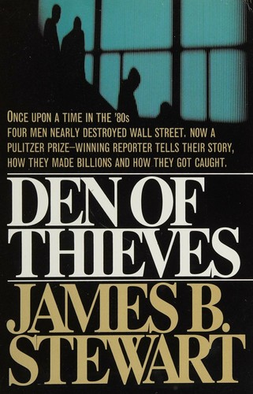

Library › Money & Finance
Den of Thieves — Summary & Key Lessons

Boesky, Milken, Siegel, Levine: four men, one information mill, and the biggest insider-trading scandal Wall Street had ever seen.
📖 OPEN THE FULL INTERACTIVE BREAKDOWN →🌐 Read it in Hindi, Hinglish, Gujarati, Tamil & 22 more languages — free, with audio.
💡 The Big Idea
Stewart (front-page Wall Street Journal editor) reconstructs the investigation that started with a detail (Levine's implausible trading luck and a Bahamian account) and unraveled into the decade's defining scandal: arbitrageur Ivan Boesky (the model for the 'greed is good' era), Drexel's Michael Milken (junk bonds financing the raiders), Kidder Peabody's Martin Siegel, and the web of leaked deal information that made a parallel market of advance knowledge. The book is a procedural masterpiece (the prosecutors' building of the case, the flips, the taping) and an anatomy of a subculture: information as currency, loyalty networks across firms, rationalization ('everyone does it', 'it's victimless'), and the eventual $1+ billion in fines and prison terms. Its modern relevance is permanent: wherever material non-public information flows through relationships, this is the weather forecast.
🧠 The 8 Key Lessons
Lesson 1: Lifestyle Arrogance Is the First Testimony
Levine's Yachts
The investigation began because Dennis Levine's spending (mansions, art, yachts on an investment banker's salary) and improbable trading record drew quiet attention: fraud advertises through lifestyle long before it confesses. The detection lesson generalizes: unexplained affluence relative to legitimate income is the cheapest red flag in any organization (procurement, finance, partnerships). Your compliance program should start with arithmetic, not wiretaps.
📖 Example: SEC accountants built the case on pattern analysis: Levine's offshore accounts traded ahead of deals with statistical impossibility, and his lifestyle consumed the profits in plain sight. Read the full example →
⚡ Do this: Run a lifestyle-vs-income sanity check on your own books (personal and company). If your spending story can't be told to a tax auditor without sweating, the problem isn't the auditor.
Lesson 2: Information Networks Outlive Compliance Manuals
The Parallel Market
The scandal's architecture was social: bankers, lawyers, arbitrageurs exchanging deal information across dinner tables and golf games, denominated in favors ('one-time' tips, reciprocal leaks). Each firm had compliance policies; the network bypassed all of them because the currency was relationships. The governance lesson: your real information flows live in relationships, so control them with incentives and consequences, not just documents.
📖 Example: Siegel's first tip felt like friendship; by the third, he was structuring deals to feed the network, and his Kidder salary became pocket change beside the side-channel. Read the full example →
⚡ Do this: Map your organization's informal information flows (who gossips deal terms to whom across companies). Add one bright-line rule with real consequences, and enforce it on a friend this year to make it real.
Lesson 3: Rationalization Speaks in Euphemisms
'Gray Areas'
Every participant had a vocabulary that made theft sound like technique: 'gray area', 'information arbitrage', 'everyone does it'. The language preceded the crime and enabled it, converting stealing into cleverness. The internal-control lesson: police your own euphemisms; a team that can't say 'we're trading on someone's secret' in plain words has already crossed the line in their minds.
📖 Example: Boesky's public speeches on integrity (while running the largest insider network) show euphemism's final form: the vocabulary of virtue pasted over the ledger of larceny. Read the full example →
⚡ Do this: Audit your team's language this quarter: list every phrase used to describe an advantage you take over counterparties. Rewrite each in plain English, and see which ones survive the translation.
Lesson 4: The Star Is the Scariest Compliance Risk
Milken's Kingdom
Milken's junk-bond desk (Drexel's profit engine, his personal network of raiders and CEOs) made him unfireable: compliance concerns were overridden because he WAS the business. Drexel's eventual death (plea, $650 million, collapse) came from exactly that dependency. The organizational lesson: your highest-margin, least-challengeable star is where your tail risk lives; build checks on the person you most can't afford to alienate, or their eventual mistake carries the whole firm.
📖 Example: Executives who feared Milken's departure approved structures they'd have rejected from anyone else; when the indictment came, the star's actions were the firm's actions, and the firm died with the brand. Read the full example →
⚡ Do this: Identify the person whose departure you fear most. Install one independent check on their domain this year, framed as institutional survival (it is), and survive their reaction.
Lesson 5: Flip the Periphery Before the Center
The Prosecutor's Ladder
US Attorney Giuliani's team built the case by flipping the outer ring first (Levine's subordinates, then Levine, then Siegel, then Boesky, each trading testimony for time), so the center (Milken) faced witnesses, documents and isolation. The negotiation architecture generalizes: in any multi-party failure (fraud, partnership breakup, vendor collusion), the first cooperation deal is the cheapest and the leverage compounds. Move early, move first.
📖 Example: Each flip added tapes, ledgers and testimony that made the next flip cheaper, until Milken's 'network' became a prosecution exhibit list. Read the full example →
⚡ Do this: If you're untangling a multi-party mess (or litigating one), identify the most peripheral participant with knowledge and secure their cooperation FIRST, before they realize they're a target.
Lesson 6: Victimless Crimes Have Very Specific Victims
Who Paid
The 'victimless' framing dies on the arithmetic: shareholders sold to informed traders lost the spread, pension funds underperformed, and market trust (priced in every cost of capital) degraded for everyone. The ethics lesson for founders: any informational edge you take from counterparties (data misuse, shadow terms, front-running your community) has a named victim and a compounding trust cost, even when no statute names it.
📖 Example: Post-scandal studies quantified the spread losses across thousands of trades; the invisible victims were every saver whose fund traded those markets that decade. Read the full example →
⚡ Do this: List every informational edge your business holds over counterparties. For each, ask: would I defend it on the record? Kill or disclose the ones that fail.
Lesson 7: Regulatory Cycles Reward the Early Cleaner
The Enforcement Wave
The 1980s enforcement wave (and its successors: 2000s options backdating, 2010s insider rings) came AFTER the practices were open secrets for years; firms and individuals who cleaned up early kept franchises, while the famous cases bore the accumulated weight. The strategic lesson: when your industry's gray practice is 'everyone', assume the enforcement cycle is coming, and be the first visible reformer rather than the case study.
📖 Example: Kidder (whose star turned cooperating witness) survived better than Drexel precisely because its exposure was one man, not a business model, and it cooperated loudly. Read the full example →
⚡ Do this: Name your industry's open secret (the practice 'everyone' does). Make a plan to be its loudest early critic this year; the enforcement cycle always arrives, and it keeps receipts.
Lesson 8: Document Everything, Especially for Yourself
The Tapes
The prosecution's spine was documentation: wiretaps, calendars, ledgers, tapes Boesky's team made themselves, notes Siegel kept. Modern footnote: every message is discoverable, and courts have buried founders on their own Slack. The personal lesson: write every work message as if a jury reads it, because the ones that matter will be exhibits; this is not paranoia, it is archiving.
📖 Example: The recorded conversations ('we're not going to do anything that could be a problem, right?') became the trial's centerpiece: the defendants' own voices arguing themselves into prison. Read the full example →
⚡ Do this: Adopt one message discipline today: never write what you'd be unwilling to read aloud under oath. If it needs euphemism to write, it needs deletion, or a decision.
✅ 5-Step Action Plan
- Run a lifestyle-vs-income sanity check on yourself and your key people.
- Map informal information flows; enforce one bright-line rule on a friend this year.
- Ban the euphemisms; rewrite your advantage language in plain words.
- Install an independent check on your irreplaceable star's domain.
- Write every work message as if a jury will read it, because they will.
⚠️ When This Doesn't Work
Stewart reconstructed from investigations, trials and interviews; courtroom records anchor the core, but scene-level dialogue and internal motives are journalistic reconstruction. Milken contested his version to the end (his conviction rested on counts he disputes to this day, and his sentence was commuted), and some defendants' later lives (Milken's philanthropy) complicate the villain arc. Read it as the canonical anatomy of an information mill, with the caveat that one man's den of thieves is another's aggressive capitalism; the market's verdict, both times, was prison.
💀 The Graveyard Proves It
📞 Rajat Gupta — The $100 Millionaire Who Wanted a Billion. Burn: Reputation, freedom, legacy. Read the full case study →
💬 Best Quotes from Den of Thieves
- “Information is the most valuable commodity in the market. Stolen information is just information with a discount.”
- “Everyone at the top believed the rules were for the people below them.”
- “The system worked exactly as designed, which was the problem.”
Interactive version: mark lessons as read, listen in your language, share quote cards.